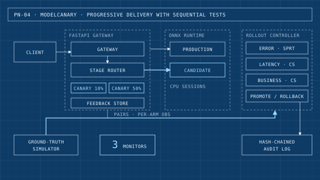

MLOps
modelcanary
Progressive delivery for ML models: a FastAPI gateway serves ONNX models in shadow and then canary stages. Sequential tests decide automatic promotion or rollback, and every decision goes to a tamper-evident audit trail.
Drawing

Highlights
- Error rate, latency and a business metric are monitored with Wald SPRT and always-valid confidence sequences.
- SHA-256 hash-chained audit log detects edits, deletions and reordering.
- Evaluated against a ground-truth simulator over thousands of held-out seeds.